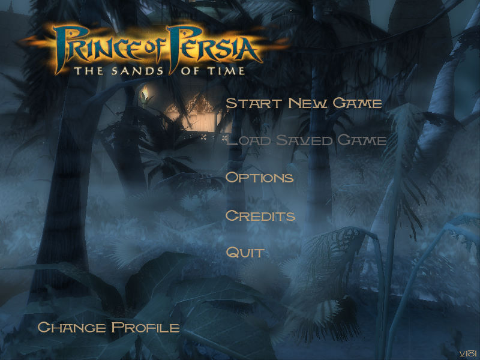
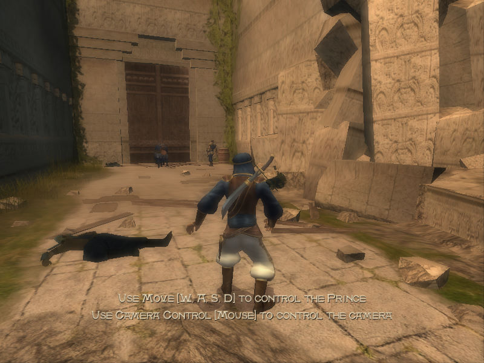

名稱：波斯王子1：時之砂 (Prince of Persia: The Sands of Time，英文版) 簡介：Ubisoft 2003年出品的動作冒險遊戲 [待補]。   保護：原始版為光碟SafeDisc 3.15，之後版本已去除SafeDisc保護 備註：進入遊戲後，若發現主畫面幾乎同色一片，看不清物體，請到Options-Graphics，將 FOG選項調成OFF。 檔案：nocd.rar = 免光碟檔

